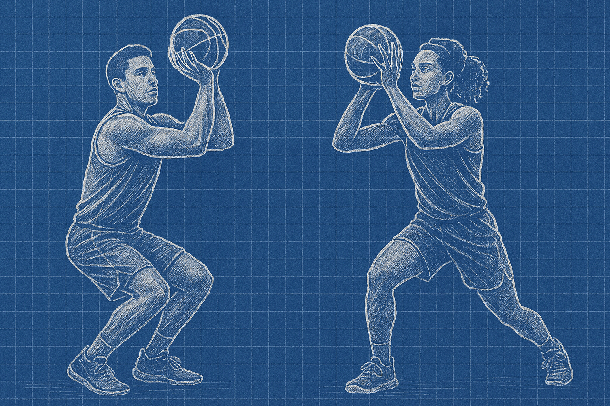
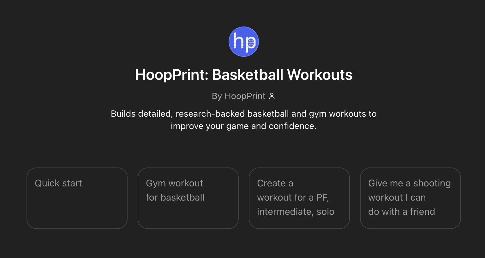
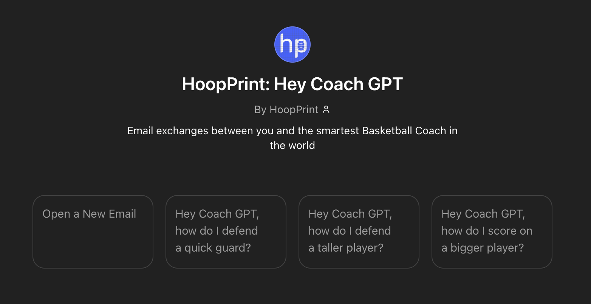

HoopPrint: The Blueprint to Better
Basketball is a game of confidence. Most players can see whether you have it or you don’t. What happens when you lose self-confidence? How do you make your team better? What do you do when you’re on a losing streak? Do you know what you did wrong and do you know how to fix it? Do you know how to fix it but you don’t have time? Do you have time but don’t want to pay a monthly subscription for a training program? Do you have the money but need something to organize how to work on your game? HoopPrint is here to help.
Confidence
I remember watching the OKC Thunder vs. the Minnesota Timberwolves play during the 2025 playoffs, and I remember at the beginning of one quarter a sideline reporter shared an anecdote after speaking with player Shai Gilgeous-Alexander earlier that day. SGA reportedly said that during his early years with the LA Clippers, he was frustrated and there were times when he wondered if he really was good at basketball. He was an 11th overall pick in 2018 and averaged 11 PPG at 48% shooting, which was not a bad rookie season but left a lot to be desired.
SGA was traded after his rookie year along with five first round draft picks and other assets to the OKC Thunder in exchange for Paul George, an All-Star player. Six years later at 26 years old, Shai Gilgeous-Alexander, became the 2025 scoring champion averaging 33 PPG and led his team to the NBA Finals. Paul George, 35 years old, has been struggling with injuries and is still seeking his first trip to the NBA Finals. Paul George, albeit a very good player in the league, has never won MVP.
If I could wave a magic wand, I’d want everyone reading this to experience what SGA did—rising from quiet self-doubt to owning his greatness, rebuilding his confidence piece by piece, and stepping fully into the player he was always meant to be.
Data as a Coach
Maybe you’ve played basketball in rec leagues or played competitively in high school or college. The highs can be high and lows can be very low. Losing is a horrible feeling, but if we won all the time, sports wouldn’t be any fun. Competing is fun, and it’s what drives us to get better. I’m not a coach and haven’t played much more than an intramural league, but I am an Ivy League graduate, earned a Master’s degree from the top public university in the country, and work professionally as a data analytics expert. I’ve attended the MIT Sports Analytics Conference and was inspired by how data and technology are improving sports. HoopPrint is here to help. A new tool to help you maximize your basketball growth potential.
Meeting you where you are
There’s no shortage of advice out there—whether it’s from skills trainers, strength coaches, former players, analysts, or even influencers. But the truth is, not all of it will match where you are in your basketball journey. It’s like trying to teach a class where half the students have read the textbook and the other half haven’t—everyone’s on a different page, and that makes real learning hard. Even if someone’s great at what they do, unless you’re working with them consistently in a structured program, their tips might not actually move the needle for you.
We’ve all experienced working with coaches that don’t mesh with us.
HoopPrint has no attitude... HoopPrint is personalized for you… HoopPrint is never late and on-demand (unless you don’t have Internet). Best of all, this tool is free.
Too much pressure, not enough fun
We’ve all been there—turned the ball over, airballed a shot, missed an open layup, shouted in frustration, or dealt with an injury that pulled us away from the game we love. It’s a deeply frustrating feeling. But whether we’re former athletes or lifelong fans, we always find our way back. Basketball doesn’t just challenge us—it revives us. It fuels that inner fire to compete, to connect, to feel alive.
These days, social media often glorifies the grind, turning the game into a constant pursuit of hustle and perfection. While you can pursue that, basketball was never meant to feel like a job. At its core, basketball is a simple game—ten people sharing the court, pushing each other, having fun. For me, the joy comes when I’m moving freely, matching my opponent’s energy, and building unspoken chemistry with my teammates. That’s when the game feels purest. That’s when it’s the most fun.
HoopPrint designs drills and games that are fun and engaging that you can practice with friends. HoopPrint helps you understand the game like it’s a game of chess. “If I’m shooting it, I think I’m going to make it. The confidence is always there.” ~ Steph Curry Let’s get started.
The Product
HoopPrint: Basketball Workouts
This GPT is your personal basketball practice planner, designed exactly to your specifications. Each workout comes with research-driven drills designed to improve a specific area of your game you want to work on. Let’s say you want to shoot around at the nearby gym or park. HoopPrint will design an approximately 40-minute workout with warm up drills, instructions, recommended sets and reps, and cool-down options. Much like a gym workout, this GPT organizes drills for you in an instant - free of charge. All you need to do is ask and then you’ll get a full workout on your phone.
HoopPrint: Hey Coach GPT
This GPT simulates email exchanges with a highly experienced, data-driven coach. Coach GPT will explain what you’re doing wrong and how to fix it, using information from real-life coaches, professional guides from various high level basketball organizations, and scientific literature.
